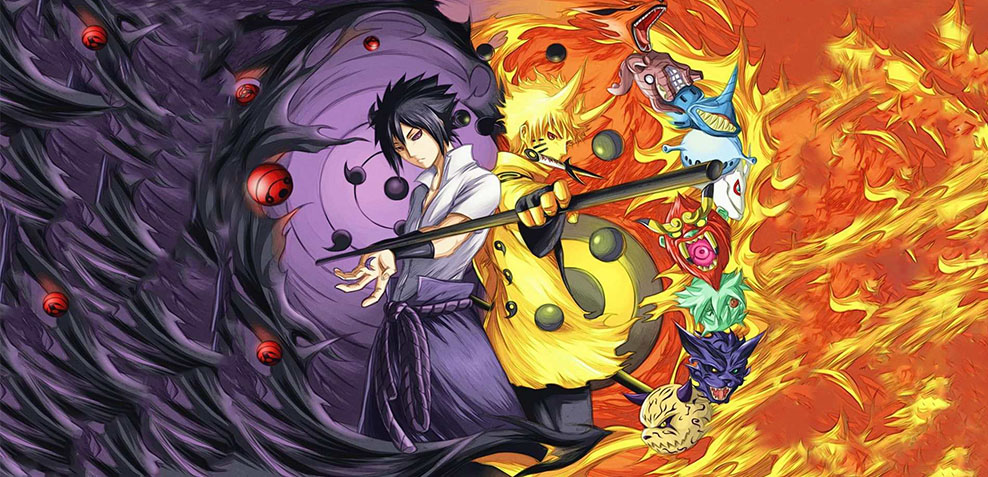

-

- 
-

日本电视动画《BORUTO -火影新世代-》（中国大陆译名《博人传：火影忍者新时代》）改编自岸本齐史原作并监修、池本干雄编绘、小太刀右京编剧的同名漫画，是《火影忍者》系列的续篇，讲述原作故事完结后漩涡鸣人之子漩涡博人的冒险故事。动画的后续剧情将对岸本齐史负责脚本的剧场版《火影忍者剧场版：博人传》作出补充
动画与前作《火影忍者》《火影忍者疾风传》一样由Studio Pierrot（小丑社）负责制作。2017年4月5日起每周三16：55在东京电视台系列首播。
随着和平的到来而走向近代化的木叶隐村。高楼林立，巨大显示屏中播放出影像，连结各区域的电车在村里奔驰。虽说是忍者村，但一般民众也增多，忍者的生存方式也在逐渐改变的这个时代——
村子的领袖、第七代火影·漩涡鸣人的儿子博人，进入了培育忍者的学校"忍者学校"。周围的学生们带着"火影的儿子"这样偏见的目光看待博人，但博人凭借天生的破天荒性格将这种小事轻松越过！
博人与新的伙伴相遇，他将如何挑战突然发生的神秘事件？在众人心中如疾风般狂奔的"漩涡博人"的物语，开始！！